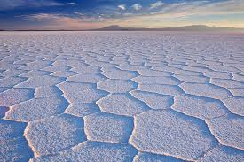
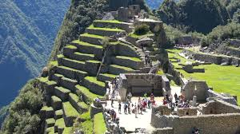
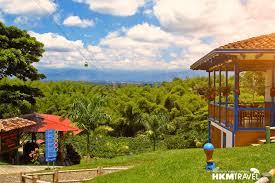

Angel Falls,Venezuela

Salto Angel, also known as Kerepakupai (the deepest fall) to the Pemón tribe, is one of the most breathtaking places I’ve seen in my life.It’s located in Canaima National Park and, at 979 meters high, is the highest uninterrupted waterfall in the world.If you want to get there, you’ll need to fly to Canaima because there are no accessible roads. I took the overflight to watch it from above and it was a mind-blowing experience!
Salar De Uyuni,Bolivia
Sticking with the “records” theme, Salar de Uyuni is the world’s largest salt flat, at over 10,000 square kilometers.I was impressed by the region’s endless white expanses and surreal scenery. It really looked like I had arrived on another planet in which smoky volcanoes, colored lagoons and great deserts create the scenery.It’s also a great place for watching wild fauna like llamas and pink flamingos all over the lakes. Definitely one of the best places to visit in South America!
Machu Picchu,Peru
The sacred city of Machu Picchu was built in the 15th century and later abandoned. Probably the most famous archaeological places in South America, this Incan citadel is famous worldwide for its huge stone walls and mysterious history.I recommend visiting Machu Picchu early in the morning to watch the sun rising over the green peaks.
Rio de Janeiro,Brazil

One of the best places in South America is Rio de Janeiro – a place that really touched my heart.Most people like it because it offers nice beaches and crazy parties. That’s true. However, Rio offers hidden secrets as well. You’ll have the chance to enjoy a fascinating mix of African-European culture and top-class hiking.The city boasts the world’s largest urban forest, which contains magnificent mountains and peaks. Rio de Janeiro has dozens of trails, so I recommend going up to the mountains and enjoying the city from above.
Eje Cafetero,Colombia
Colombia has some of the best coffee in the world, so I couldn’t resist the temptation of trying a delicious cup right in a coffee plantation! It was great to learn about the history of the coffee, the process and the varieties grown.The most famous getaways are Salento, Filandia and Pijao – all lovely colonial towns in which it looks like no time has passed.Moreover, the lush, green mountains offer a wide range of activities like hiking, horseback riding, kayaking, canopying and more. One of the highlights of the visit was taking a hike around Valle del Cocora.